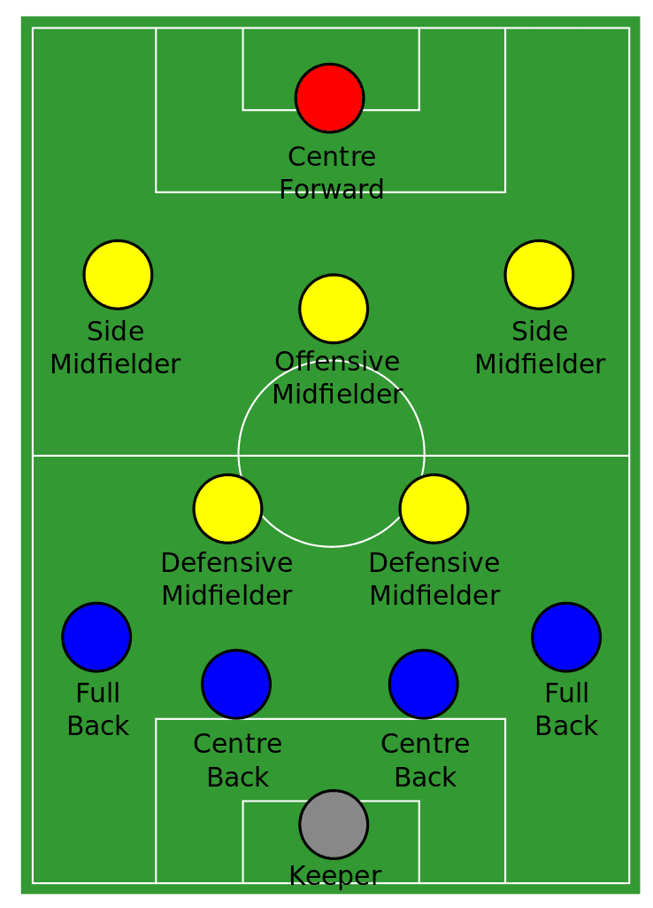

Πώς παίζεται;
ΒΑΣΙΚΟΣ ΣΤΟΧΟΣ ΤΩΝ ΟΜΑΔΩΝ:
Γκολ του Dzeko με κεφαλιά στο Ιταλικό πρωτάθλημα με τη Roma.

Το ποδόσφαιρο αποτελείται από 2 ομάδες, 11 παικτών η καθεμία, οι οποίες προσπαθούν με ομαδική δουλειά να
παραβιάσουν την αντίπαλη εστία (τέρμα) ώστε να σκοράρουν γκολ. Νικήτρια ομάδα βγαίνει αυτή, η οποία έχει σκοράρει
περισσότερα γκολ από την άλλη. Κάθε αγώνας έχει διάρκεια 90 λεπτών, όπου τα 45 λεπτά είναι
 Ο Τερματοφύλακας είναι ξεχωριστός παίκτης για την ομάδα. Είναι ο μόνος που έχει την δυνατότητα να χρησιμοποιεί τα χέρια του (εντός του μεγάλου ορθογωνίου κοντά στο τέρμα, γνωστό κι ως «περιοχή»), ώστε να αποκρούει την μπάλα, ή ακόμη και να την κρατήσει για κάποιο διάστημα στα χέρια του. Σε αντίθεση με τους άλλους παίκτες, ο τερματοφύλακας φοράει γάντια και φανέλα με ξεχωριστό χρώμα από τους υπόλοιπους 10 παίκτες.
Οι αμυντικοί αποτελούνται από τους κεντρικούς αμυντικούς και τους αυτούς που είναι στην πτέρυγα. Δύσκολη δουλειά αυτή του αμυντικού, καθώς πρέπει στην επίθεση να ελέγχει την άνοδό του και στην άμυνα να κλείνει τους αντιπάλους. Οι αμυντικοί στην πτέρυγα, κάνουν πιο συχνές ανόδους από τους κεντρικούς αμυντικούς και συνήθως είναι αυτοί που βγάζουν σέντρες και σημαντικές μπαλιές.
Οι μέσοι έχουν πολλαπλούς ρόλους ανάλογα με τη θέση στην οποία παίζουν. Για παράδειγμα οι μέσοι στην πτέρυγα, πρέπει να ζητάνε πάσες από τους συμπαίκτες τους, ώστε να πλαγιοκοπούν. Οι back half, είναι υπεύθυνοι στο να κλείνουν τους αντιπάλους και να σταματάνε την μπάλα από το να πηγαίνει πιο κοντά στην εστία. Ένας μέσος, πρέπει να ξέρει πότε να κάνει βήματα πίσω και πότε να βγαίνει στη θέση κρυφού επιθετικού.
Οι επιθετικοί μιας ομάδας, πρέπει να είναι καλά προπονημένοι ώστε να μπορούν να νικήσουν τον αντίπαλο τερματοφύλακα. Ένας επιθετικός πρέπει να ζητάει στον σωστό χρόνο την μπάλα, να κάνει δυνατές κεφαλιές και σουτ και να μπορεί να βγει νικητής σε ευκαιρίες «τετ α τετ» (ένας εναντίνον ενός με τον τερματοφύλακα). Οι πιο εκλεκτοί επιθετικοί είναι είτε πολύ εύστοχοι, είτε έχουν υπερβολικά δυνατό πόδι.
 Σε έναν παίκτη είναι δυνατό να χρεωθεί φάουλ, εάν αυτός κάνει αντικανονική επαφή σε έναν αντίπαλό του ή όταν ο
παίκτης κάνει κοντρόλ με το χέρι. Ο παίκτης
κινδυνεύει να δει την κίτρινη κάρτα (προειδοποίηση για αποβολή) εάν είναι «σκληρό» το φάουλ, ή,
σε περίπτωση αντιαθλητικού φάουλ, ο παίκτης θα δει την κόκκινη κάρτα, στην οποία περίπτωση
ο παίκτης αποχωρεί για το υπόλοιπο του αγώνα από τον αγωνιστικό χώρο, αφήνοντας έτσι την ομάδα του με -1 παίκτη. Από την άλλη,
η ομάδα η οποία κέρδισε το φάουλ, παίρνει την μπάλα και τη στήνει στο μέρος το οποίο αυτό πραγματοποιήθηκε. Συνήθως, τα πιο ευνοϊκά
φάουλ είναι αυτά τα οποία πραγματοποιούνται κοντά στην εστία, διότι ο εκτελεστής του φάουλ μπορεί εύκολα να περάσει
απευθείας την μπάλα στα δίχτυα.
Σε έναν παίκτη είναι δυνατό να χρεωθεί φάουλ, εάν αυτός κάνει αντικανονική επαφή σε έναν αντίπαλό του ή όταν ο
παίκτης κάνει κοντρόλ με το χέρι. Ο παίκτης
κινδυνεύει να δει την κίτρινη κάρτα (προειδοποίηση για αποβολή) εάν είναι «σκληρό» το φάουλ, ή,
σε περίπτωση αντιαθλητικού φάουλ, ο παίκτης θα δει την κόκκινη κάρτα, στην οποία περίπτωση
ο παίκτης αποχωρεί για το υπόλοιπο του αγώνα από τον αγωνιστικό χώρο, αφήνοντας έτσι την ομάδα του με -1 παίκτη. Από την άλλη,
η ομάδα η οποία κέρδισε το φάουλ, παίρνει την μπάλα και τη στήνει στο μέρος το οποίο αυτό πραγματοποιήθηκε. Συνήθως, τα πιο ευνοϊκά
φάουλ είναι αυτά τα οποία πραγματοποιούνται κοντά στην εστία, διότι ο εκτελεστής του φάουλ μπορεί εύκολα να περάσει
απευθείας την μπάλα στα δίχτυα.
 Εάν ένας επιτιθέμενος παίκτης βρίσκεται στην αντίπαλη περιοχή (δηλαδή το ορθογώνιο τμήμα του γηπέδου, όπου ο
τερματοφύλακας έχει τη δυνατότητα να πιάσει την μπάλα με τα χέρια του) και του υποστεί φάουλ, τότε η ομάδα κερδίζει πέναλτυ.
Σε αυτήν την περίπτωση η μπάλα στήνεται 11 μέτρα μακριά από την αντίπαλη εστία. Στη συνέχεια, η ομάδα που κέρδισε το πέναλτυ, επιλέγει
τον εκτελεστή του πέναλτυ, ο οποίος θα αντιμετωπίσει τον τερματοφύλακα. Κατά την εκτέλεση του πέναλτυ, όλοι οι
υπόλοιποι παίκτες μένουν εκτός περιοχής μέχρι να πάρει μέρος η εκτέλεση του πέναλτυ. Τα φάουλ εντός περιοχής, έχουν περισσότερη πιθανότητα να δείξουν κάποια κάρτα στον παίκτη που το έκανε.
Εάν ένας επιτιθέμενος παίκτης βρίσκεται στην αντίπαλη περιοχή (δηλαδή το ορθογώνιο τμήμα του γηπέδου, όπου ο
τερματοφύλακας έχει τη δυνατότητα να πιάσει την μπάλα με τα χέρια του) και του υποστεί φάουλ, τότε η ομάδα κερδίζει πέναλτυ.
Σε αυτήν την περίπτωση η μπάλα στήνεται 11 μέτρα μακριά από την αντίπαλη εστία. Στη συνέχεια, η ομάδα που κέρδισε το πέναλτυ, επιλέγει
τον εκτελεστή του πέναλτυ, ο οποίος θα αντιμετωπίσει τον τερματοφύλακα. Κατά την εκτέλεση του πέναλτυ, όλοι οι
υπόλοιποι παίκτες μένουν εκτός περιοχής μέχρι να πάρει μέρος η εκτέλεση του πέναλτυ. Τα φάουλ εντός περιοχής, έχουν περισσότερη πιθανότητα να δείξουν κάποια κάρτα στον παίκτη που το έκανε.
 Ένας παίκτης θα λέγεται ότι βρίσκεται εκτός θέσης (offside), όταν εκείνος είναι πιο μπροστά από τον προτελευταίο
αντίπαλο αμυνόμενο (ο τερματοφύλακας είναι ο τελευταίος αμυνόμενος). Αυτό μπορεί να κριθεί, τραβώντας μία γραμμή, παράλληλη με την εστία, στο σημείο που βρίσκεται ο προτελευταίος
αμυνόμενος. Στην περίπτωση που η μπάλα είναι πιο μπροστά από τον προτελευταίο αμυνόμενο, η γραμμή θα τραβηχθεί πάνω στην μπάλα. Αν υπάρχει
κάποιος αντίπαλος πιο μπροστά από αυτήν τη γραμμή, τότε σταματάει το παιχνίδι, σαν να έγινε φάουλ, και δίνεται ελεύθερο χτύπημα
στην ομάδα. Κίτρινες και κόκκινες κάρτες σπάνια δίνονται σε αυτές τις περιπτώσεις.
Ένας παίκτης θα λέγεται ότι βρίσκεται εκτός θέσης (offside), όταν εκείνος είναι πιο μπροστά από τον προτελευταίο
αντίπαλο αμυνόμενο (ο τερματοφύλακας είναι ο τελευταίος αμυνόμενος). Αυτό μπορεί να κριθεί, τραβώντας μία γραμμή, παράλληλη με την εστία, στο σημείο που βρίσκεται ο προτελευταίος
αμυνόμενος. Στην περίπτωση που η μπάλα είναι πιο μπροστά από τον προτελευταίο αμυνόμενο, η γραμμή θα τραβηχθεί πάνω στην μπάλα. Αν υπάρχει
κάποιος αντίπαλος πιο μπροστά από αυτήν τη γραμμή, τότε σταματάει το παιχνίδι, σαν να έγινε φάουλ, και δίνεται ελεύθερο χτύπημα
στην ομάδα. Κίτρινες και κόκκινες κάρτες σπάνια δίνονται σε αυτές τις περιπτώσεις.